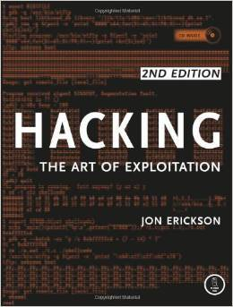

How to read a texbook


So I really like learning things. It was one of my favourite parts of university (and high school before that), so I was really missing it when I started working. I tried for a while to read things when I felt the urge, but this rarely happened. I tried enrolling in a cousera course, but it felt a bit too much like the shitty parts of school, namely I can't move at my own pace.
My current system involves BEEMINDER which is a pretty amazing tool for people like me who suck at motivating themselves. The basic idea is that you commit to some goal and beeminder makes sure that you reach it by forcing you to do a minimum amount of your goal everyday. You can do more than your goal and let it ride for a few days, but eventually you'll have to do work. If you fail, you have to pay beeminder money.
I use it to make sure I do an hour a week worth of reading / working of each of my texbooks. Currently I am reading the Structure and Interpretation of Programming Languages (available as a PDF and the The C Programming Language. I wanted to make sure that I really got the fundamentals of computers. C and Scheme are both early programming languages with very different philosophies. (I know that just made some of you feel old)
As I go through these books, I am working through the exercises (You can follow my progress here and here). Writing actual code feels like the most important part of my attempts to learn so far. It's not enough (for me at least) to just read the information. I need to process it somehow, but I find working without direction (or feedback) tough. Thankfully you can find solutions to both SICP and the C programming language book on the web.

So far I've only finished one book this way is Hacking: the Art of Exploitation which I highly recommend, even if you don't want to hack anything.